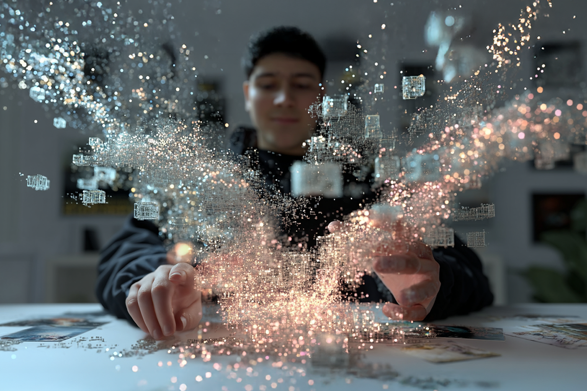
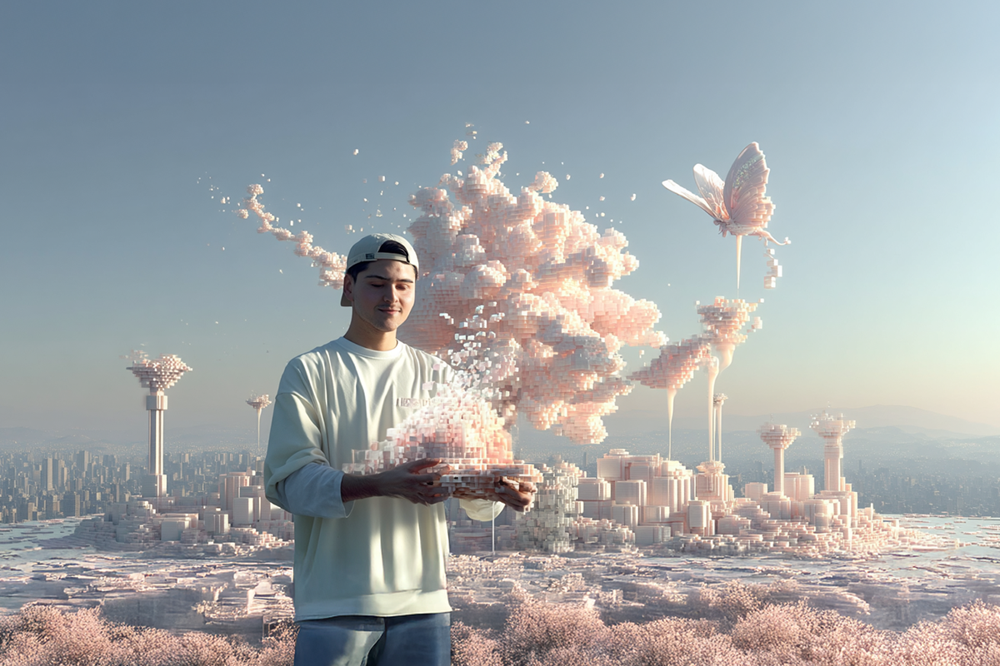
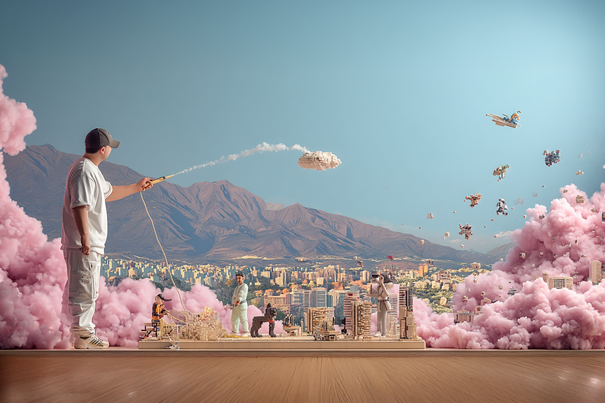

De CM a realizador audiovisual con IA
El camino del artista es diverso y ahora infinito
El camino del artista es diverso y ahora infinito

Si es la primera vez que lees un post de El Comparador, te contamos algo antes de que sigas tu lectura. En Compara somos fans de la IA y la tecnología. Pero no es solo fanatismo, sino que también lo incorporamos en nuestro trabajo diario, ¿para qué?, para automatizar trabajos mecánicos o para crear sin fin.
Hoy les vamos a contar la historia de Darío, podrán recordarlo de capítulos como “De una agencia a una startup” y otros videos en nuestras redes. Spoiler alert: es uno de los creadores de contenido audiovisual más increíble del condado, pero mejor que él nos cuente en detalle.
Darío: Mi puesto como tal no ha cambiado, en realidad lo que han cambiado son las funciones y tareas que desarrollo dentro del equipo.
En un comienzo, todo el contenido que hacíamos era grabado y editado de forma “manual”, de hecho, seguimos haciendo algunos contenidos para redes así, pero desde que comencé a explorar herramientas de IA, hemos logrado crear piezas hechas en su totalidad con inteligencia artificial. Desde el guion, creación de imágenes, hasta animación de videos en distintos formatos.
Darío: Más que una necesidad, fue algo que mutó naturalmente.
Al descubrir el potencial de la IA para la creación de imágenes y videos, junto al equipo de marketing comenzamos a explorar cada herramienta que iba saliendo. Invertimos en diversas plataformas para acceder a más créditos, mejores resultados, mayor velocidad y ampliar nuestras posibilidades creativas.

Daría: La IA nos ha dado herramientas para hacer realidad ideas que hace 4-6 meses nos tomaba meses desarrollar. Te doy un ejemplo concreto: si hace 4 meses yo quería hacer un video con estética 2D, tipo videojuego de Mario Bros, tenía que pedirle a un diseñador que creara la imagen del personaje en todas las posiciones necesarias para simular que está corriendo, y luego un post productor tendría que animarlo frame por frame.
Hoy puedo crear un prompt en Midjourney y en 20 segundos tengo 4 opciones de resultados. Después de elegir la que más me gusta, le pido a una plataforma como Kling o Runway que me anime esa imagen, y en menos de 30 minutos ya tengo el video con estética 2D tipo Mario Bros listo.
A veces puede tomar más tiempo, dependiendo del prompt y de los resultados que me den las plataformas, pero el punto es que ahora podemos pensar en ideas que antes quizás habríamos descartado porque técnicamente eran muy complicadas o costosas de hacer.
Darío: Creo que mi camino está en seguir subido en el tren de la creación de contenido y producción creativa con IA, perfeccionando cada vez más los resultados. Hay mantenerse actualizado constantemente, probando cada herramienta nueva que aparece, ya que todos los días sale algo.
De todas formas creo que no se trata solo de dominar las herramientas actuales, sino de intentar integrarlas de buena manera en los procesos creativos y saber qué plataforma usar en cada situación y combinar diferentes herramientas para lograr resultados que antes eran impensables.

Darío: Obviamente, me gusta compartir el conocimiento y formas de creación junto al equipo. De hecho, ya hemos compartido algunas herramientas que utilizamos periódicamente y su forma de uso. Así, todos nos vemos más involucrados en esta evolución y tenemos la posibilidad de pensar en ideas que suenan muy locas, pero que en un par de horas pueden estar listas.
Darío: Lo más importante es usarla desde ya y darse cuenta de la cantidad de posibilidades que nos entrega día a día. A modo personal, pienso que las herramientas y plataformas de IA me han entregado un punch al momento de pensar ideas para redes y obviamente hay muchos resultados de otros creadores que sirven como inspiración. Si estás buscando inspiración, creo que las plataformas de IA pueden ser un buen lugar para encontrarla.
Con todo esto que Darío nos contó, reafirmamos lo que decimos siempre, la IA llegó para potenciarnos y poder llevar a cabo esas ideas que creímos que nunca podríamos o que serían muy difíciles o costosas.
¿Ustedes están inmersos en el mundo de la IA? Cuéntennos que tarea les ha facilitado. Nos leemos en el próximo post.